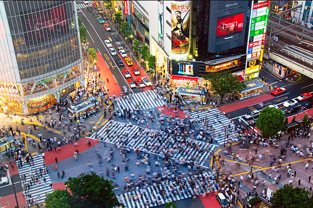
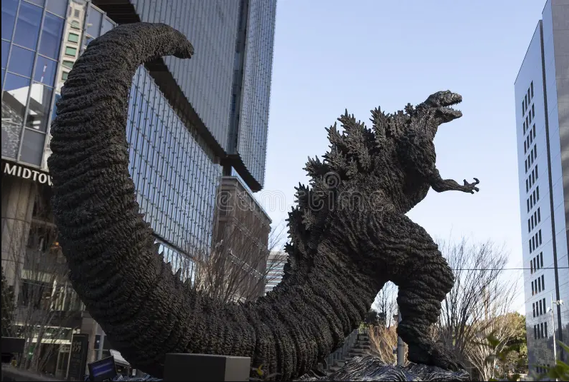
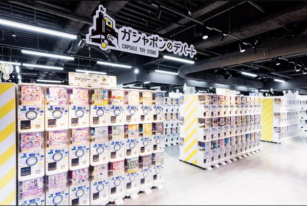
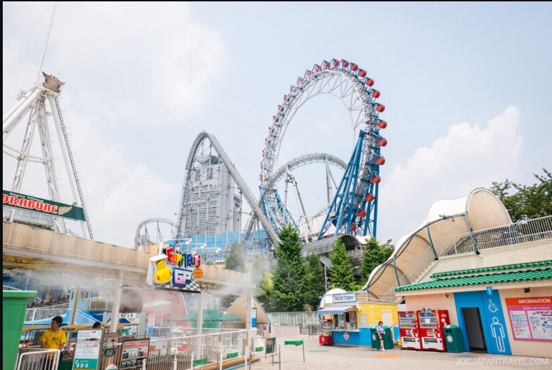
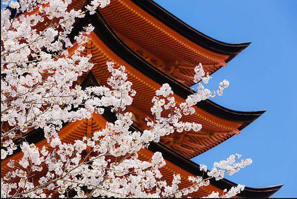
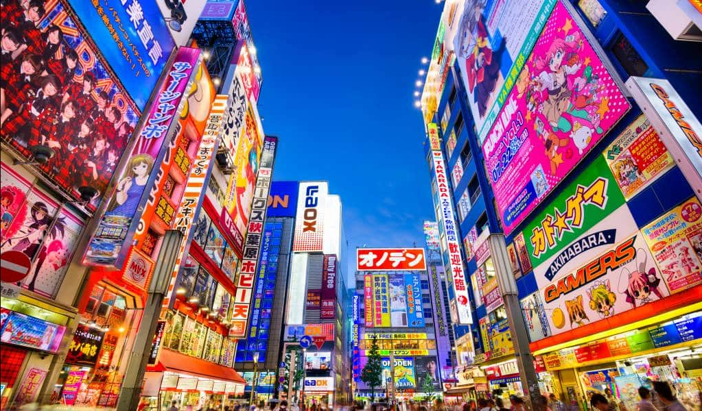
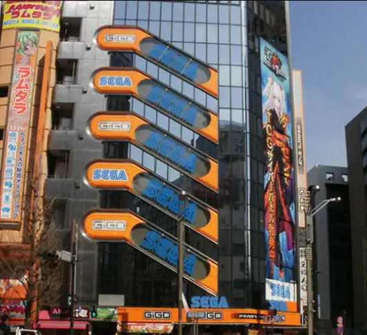
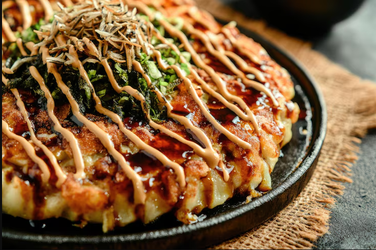
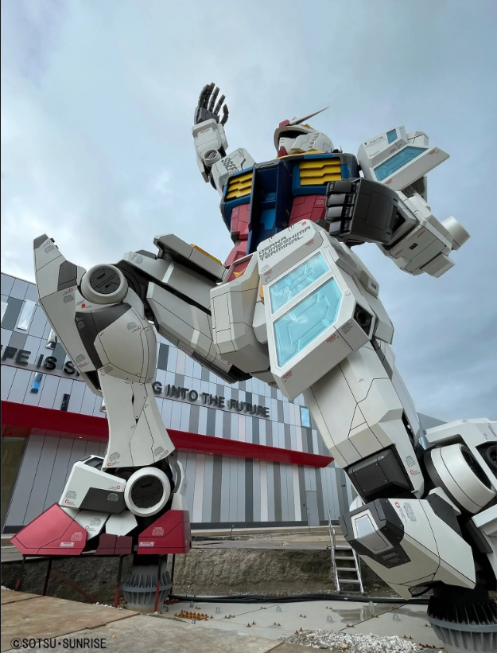

Musée Ghibli
Le musée Ghibli, niché dans le parc Inokashira à Mitaka, est un lieu féerique
entièrement dédié à l'univers du studio d'animation japonais.
On y découvre les coulisses de la création des films cultes comme Mon Voisin Totoro ou Le Voyage de Chihiro,
avec des expositions immersives, des machines d'animation et une salle de cinéma unique.
Une visite incontournable pour petits et grands, où la magie du dessin animé prend vie à chaque recoin.

Shibuya
Le Shibuya crossroad, plus grand croisement du monde
au cœur du quartier dynamique et rendez-vous des oiseaux de nuit.
Expérience unique d'enseignes colorées et d'écrans lumineux.

Statue de Godzilla
Statue du plus célèbre des Kaiju.
Officiellement citoyen japonais depuis le 9 avril 2015.
Lieu incontournable de tous pèlerinages cinéphiles.

Gashapon No Depato
Le plus grand magasin de capsules.
Paradis des vrais collectionneurs de figurines miniatures de la pop culture
et d'univers manga, au cœur du quartier d'Ikebukuro.

Tokyo Dome City Attractions
Le Tokyo Dome City Attractions est un parc d'attractions urbain situé en plein cœur de Tokyo,
offrant une expérience unique avec ses manèges spectaculaires
dont le célèbre roller-coaster qui serpente autour du Tokyo Dome,
le stade mythique du baseball japonais.

Parc Ueno
L'un des plus grands et plus célèbres parcs du Japon.
Véritable poumon vert de la ville avec ses 1 000 cerisiers en fleurs,
c'est un lieu incontournable pour un pique-nique durant le hanami fin mars.

Le quartier de Akihabara
Akihabara, surnommé "Electric Town", est le quartier emblématique de Tokyo
dédié à la culture geek, aux mangas, aux animés et à l'électronique en tout genre.
Ses rues fourmillent de boutiques multicolores proposant figurines, jeux vidéo, cosplay et gadgets high-tech,
créant une atmosphère unique et survoltée.
Un passage obligatoire pour tous les passionnés de pop culture japonaise.

Le Sega Center
Le Sega Center d'Akihabara, une véritable caverne d'Ali Baba pour les amateurs de jeux d'arcade,
répartie sur plusieurs étages débordant de machines de jeux en tout genre.
On y trouve des bornes de rythme, de combat, de jeux de cartes et surtout les incontournables UFO Catchers,
(grues) remplis de peluches et figurines aux effigies des personnages manga et animé les plus populaires.

Okonomiyaki à Monja Street
Pèlerinage gourmand incontournable, découvrez la célèbre Monja Street
et ses 80 restaurants spécialisés.
Parfaite pause gustative pour découvrir les fameux okonomiyaki,
galettes de chou, plats emblématiques du Kanto au Kansai.

Statue géante de Gundam
Située devant le centre commercial DiverCity sur l'île d'Odaiba à Tokyo,
la statue géante du robot Unicorn Gundam s'élève de manière impressionnante
à près de 20 mètres de hauteur.